This page guides you through starting GameMaker for the first time and creating your first program. We'll finish by creating a build that you can share with others.
On the Start Screen, create a new project:
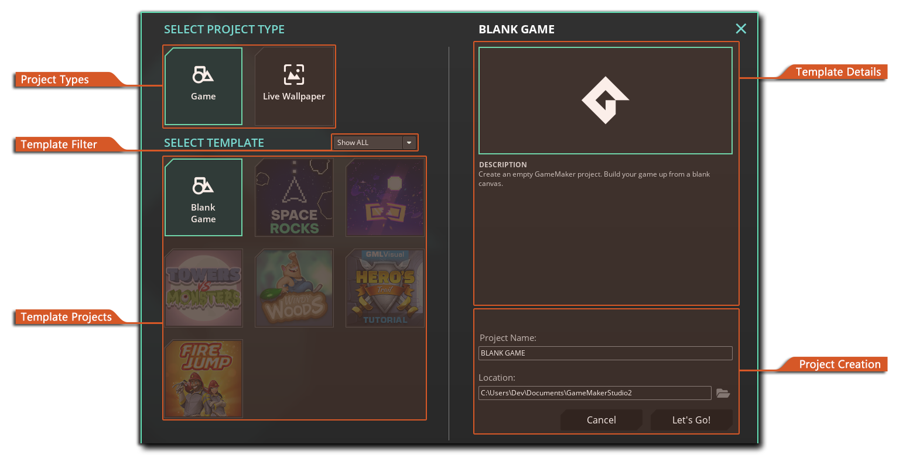
Follow these steps for your first project:This will open your project, with the following IDE sections present:
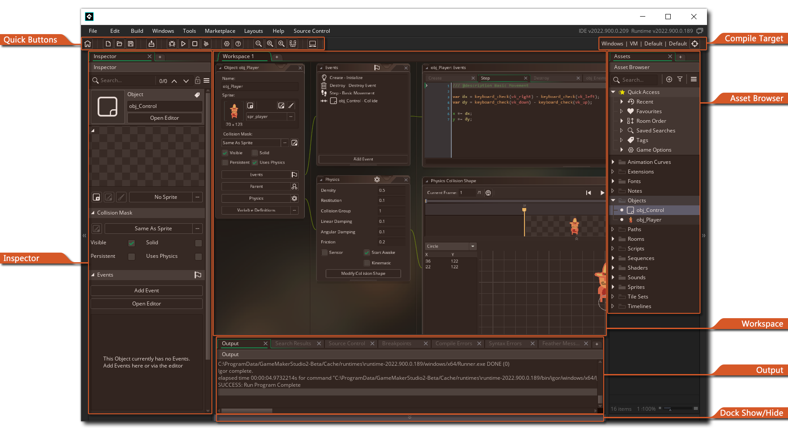
In the Asset Browser, click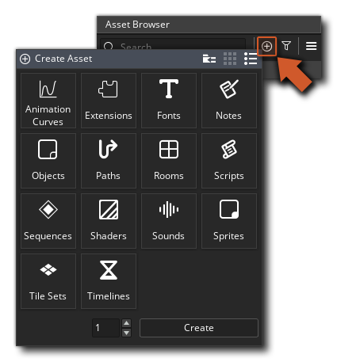
Double-click on "Sprites" or click "Create" after selecting "Sprites".What you've just created is a Sprite asset. You can assign this to an Object and it will appear in your game as an interactive object.
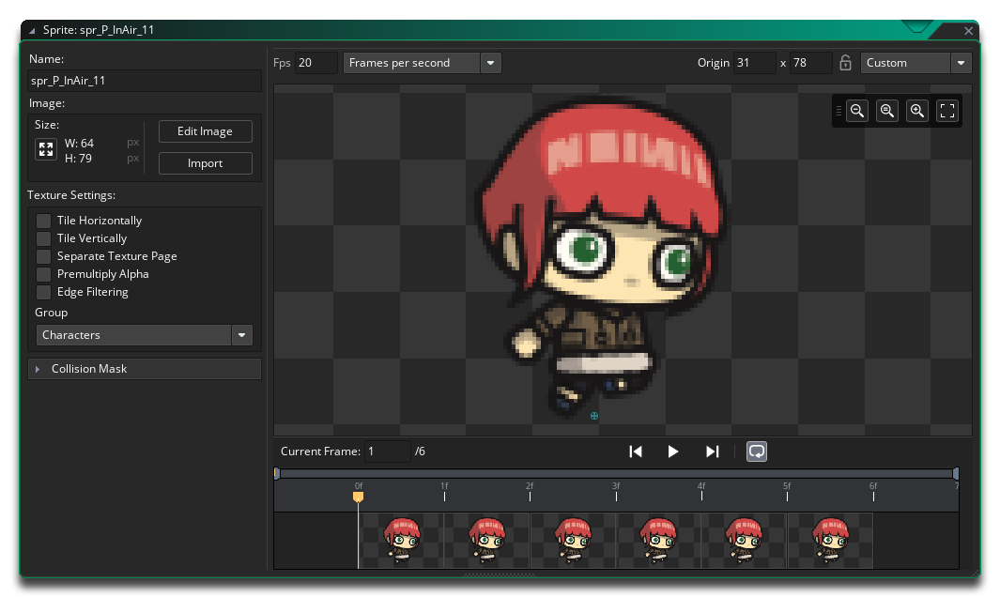
In the Editor, click on "Edit Image" to open The Image Editor to draw your Sprite. Click on "Import" to import an image file to use as your Sprite.Back in the Asset Browser, create an Object asset.
This will open The Object Editor and display the Object's properties in The Inspector.
Find the option for the Object's Sprite and assign the Sprite you created in the previous step.
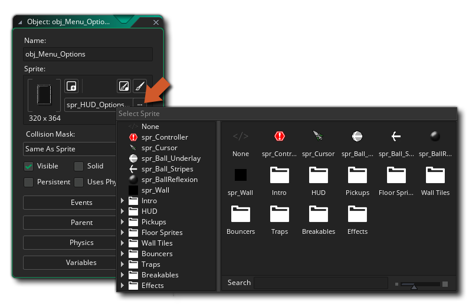
Now your Object has a Sprite assigned to it. Your image has found life in your game, as you can now interact with it.To interact with your Object, make use of Events.
Click the "Add Event" button in your Object's "Events" window:
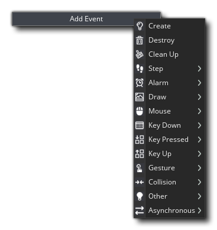
Pick the event of your choice from this list. For our Hello World, we're going to add two events:An "Instance" is a clone of your Object placed in a room. We will learn more about this later in this guide.
When you add an Event, you will be prompted to pick between GML Visual and GML Code. Go with what you want to use, as this guide covers both.
In this event, enter the following code:
show_debug_message("You clicked on me!");
For GML Visual, use the following action and properties:
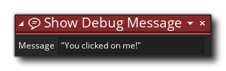
In this event, enter the following code:
move_towards_point(mouse_x, mouse_y, 2);
For GML Visual, use the following actions and properties:
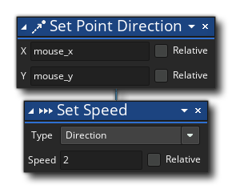
You have now programmed your Object to move toward the mouse, and when it is clicked on, to print a message to the Output log.Your project will have a "Room1" asset by default. Double-click on it to open the Room Editor:
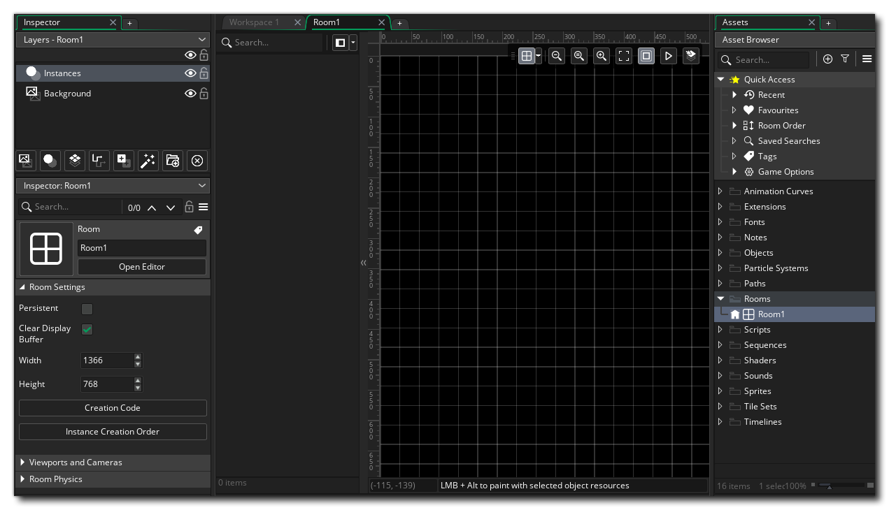
This is your canvas. When your game runs, this is what your player sees. Use this to design levels, set-up cameras and create menus.Rooms use "layers", similar to drawing programs. Layers have types, limiting what type of asset can be placed inside them.
Ensure you have the "Instances" layer selected (as seen in the image above) and from The Asset Browser, drag your object into the empty canvas. This creates an Instance of your Object.
Your basic game is now ready, with an interactive object placed within the Room canvas.
Before running the game, see the Targets menu on the top-right to check what platform target is set.
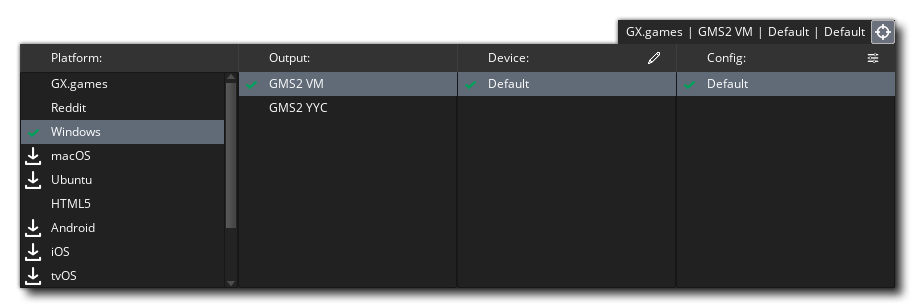
This is where you set the platform to compile for. Select "Test" or your current platform (e.g. Windows).With the correct platform target selected, press F5 or the  button at the top of the IDE.
button at the top of the IDE.
Your game should start soon, opening in a new window. You will see your Object move slowly toward the mouse, and when you click on your Instance, a message is printed in the Output log window:
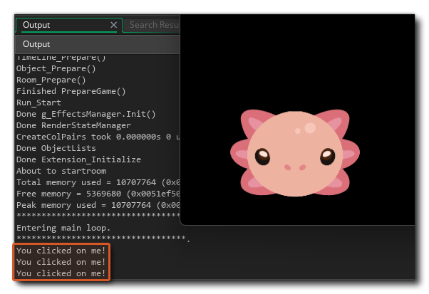
You've now tested two crucial parts of game development:To share a build, you need to be logged in.
Simply select a platform from the Targets menu and use the  Create Executable button or find the option in The Build Menu.
Create Executable button or find the option in The Build Menu.
Selecting your current platform (e.g. Windows) will let you create an executable ZIP file that you can share with others. Using the GX.games platform, you can upload your game and share a link so others can play it within their browsers.
Read the Quick Start Guide for a step-by-step introduction to the various parts of GameMaker.
For specific game tutorials, check out the GameMaker website and the GameMaker YouTube channel.
Use the Prefab Library to find assets for instant use within the IDE.
Having issues with this guide? Check the frequently asked questions below.